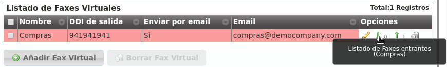

Sistema de Fax Virtual¶
IvozProvider incluye una solución de faxing simple pero eficiente que permite:
Enviar archivos PDF vía Fax.
Recibir faxes por email o verlos a través del portal web.
Error
IvozProvider usa T.38 para enviar y recibir faxes. El Operador de Marca debe utilizar un contrato de peering que tenga soporte para T.38.
Creando un fax virtual¶
Este es el interfaz que se presenta cuando creamos un nuevo fax en la sección Configuración de compañía > Faxes Virtuales:

Los campos son prácticamente auto-explicativos:
- Nombre
Utilizado en el resto de secciones para referenciar este fax
- Dirección de correo electrónico
Dirección de correo electrónico en la que queremos recibir los faxes entrantes (si seleccionamos la opción ‘Enviar por email’
- DDI de salida
DDI utilizado como número origen en los faxes salientes
Para recibir faxes en este DDI, tenemos que apuntarlo a nuestro nuevo fax en la sección DDIs:

El operador de marca puede elegir una o más rutas de salida para enviar faxes:

Esta ruta aplica a todos los faxes enviados por la compañía seleccionada (o por todas las compañías).
Nota
Las lógicas de balanceo y failover descritas en secciones anteriores también funcionan para las rutas de faxes.
Importante
Si no se define ninguna ruta específica de fax, los faxes se enrutarán como llamadas de voz normales.
Enviar un fax¶
Enviar un fax es una tarea sencilla. En primer lugar, subimos el archivo PDF y escribimos el número de destino:

Este listado muestra el fax y su estado:

Visualización de faxes entrantes¶
Los faxes entrantes se pueden recibir vía correo electrónico, pero también pueden ser visualizados y descargados desde el panel web pulsando:
